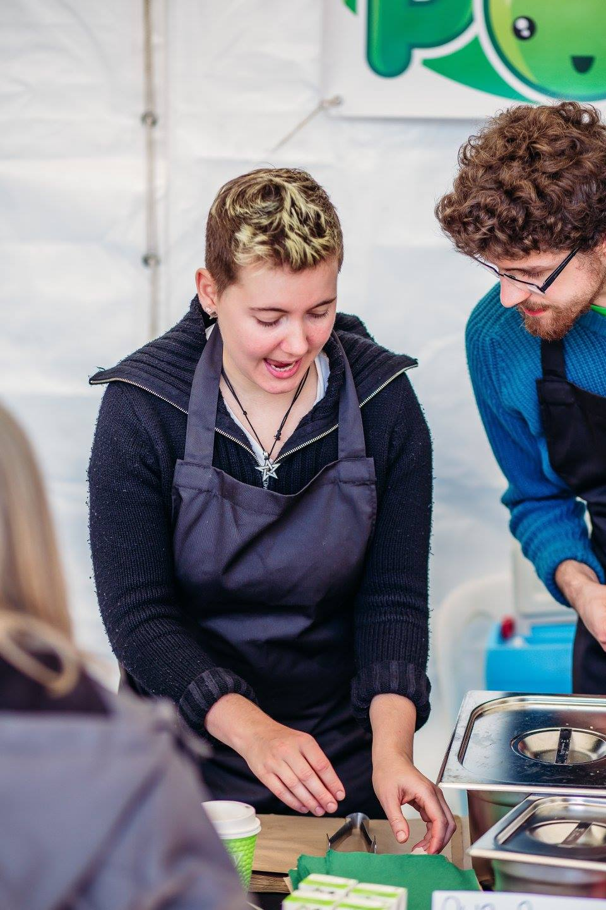

About Me
25 years old
Based in Cambridge
Modern Languages graduate

Entrepreneur
Straight after university, I wanted to start a business that would make a difference in my community…
Musician
I spend a lot of my free time playing the drums, strumming guitars and tinkering on the piano...

Coder
I have only just started on my coding journey, but I have so much further to go…
Why FAC?
Values
- The values of F&C strongly align with my own.
- I aim to define my career by making a difference to the world, so having the opportunity to learn to code while solving worthwhile problems that actually help people is a great motivation for me.
- As a non-profit and by providing free education, F&C embodies a socialist ideal - the right to learn.
Community
- I can't wait to dive into a learning environment where I am supported by like-minded people who share my enthusiasm and commitment to the aims of the course.
- alumni community, nobody gets left behind
Cooperative
- As a self-proclaimed coops geek, I am totally into collective decision-making, inter-cooperative support etc.
- monthly membership meetings of alum community, AGMs where priorities collectively set (lifelong member of community), member of CoTech network
Diversity
- keen for an inclusive organisation, learn new ways of thinking from being in a group where diversity of experiences represented.
- Safe space, women taken seriously etc
Career
- serious about making a career out of becoming a dev, enviable set of company links.
- full-time, focused
- journey of a lifetime, this changes everything
- workspaces that seem dynamic, exciting, driven to making the world a better place, flexible etc
web dev, pay it forward
- brief descript